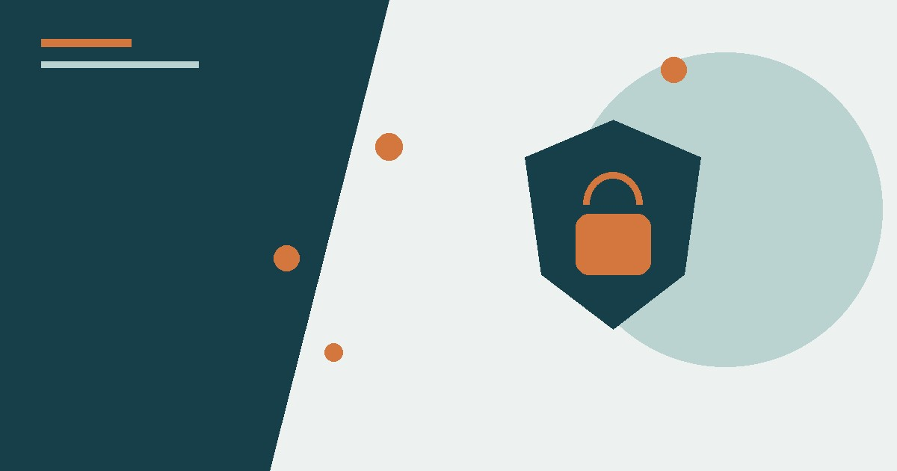
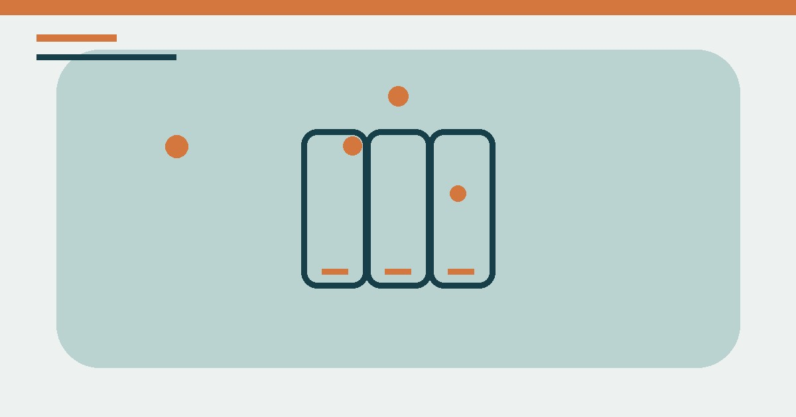
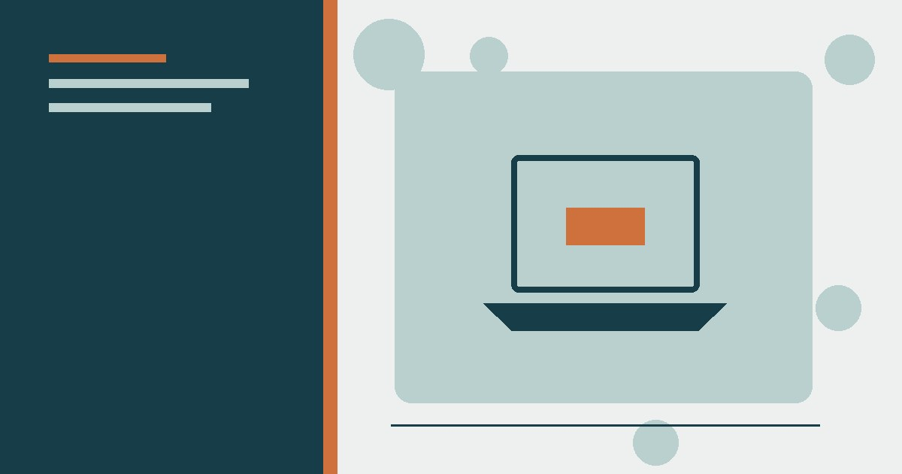

تكنولوجيا
أساسيات حماية حساباتك على الإنترنت: دليل عملي للمبتدئين
دليل حماية الحسابات من الاختراق: كلمات مرور فريدة، مدير كلمات المرور، المصادقة متعددة العوامل، مفاتيح المرور وخطة استرداد الحساب.
دليل اختيار الهاتف الذكي المناسب لميزانيتك: المعالج والذاكرة والكاميرا والبطارية، وأي المواصفات تستحق الدفع وأيها مبالغ فيه.

ابدأ بسنوات التحديث والضمان وجودة البطارية قبل عدد الكاميرات. حدد ثلاثة استخدامات أساسية للهاتف، ثم قارن جهازين أو ثلاثة داخل ميزانيتك باختبارات مستقلة. لا توجد سعة RAM أو بطارية مثالية للجميع؛ النظام والمعالج والشاشة وسياسة الشركة تؤثر في التجربة مثل الأرقام أو أكثر.
| الاستخدام | ما يستحق الأولوية | ما لا يحتاج مبالغة |
|---|---|---|
| تواصل وتصفح | تحديثات طويلة، بطارية، شاشة واضحة | تقريب كاميرا بعيد وأداء ألعاب رائد |
| تصوير يومي | معالجة الصور وتثبيت الفيديو ومراجعات الكاميرا | عدد العدسات والميجابكسل وحدهما |
| ألعاب | المعالج والتبريد ومعدل الشاشة | النحافة الشديدة والكاميرا الثانوية |
| استخدام لسنوات | التحديثات والضمان والتخزين القابل للإدارة | مزايا دعائية لن تستخدمها |
كل عام تطلق الشركات عشرات الهواتف الجديدة بأسماء ومواصفات مربكة، والمعلنون يجعلونك تشعر أنك محتاج إلى أحدث وأغلى جهاز. الحقيقة المطمئنة: يمكنك شراء هاتف ممتاز بمبلغ معقول إذا عرفت ما الذي تنظر إليه فعلًا في ورقة المواصفات. هذا الدليل يشرح لك كل شيء ببساطة.
قبل النظر إلى أي هاتف، حدد المبلغ الذي ترتاح لدفعه. القاعدة الذهبية: لا تشترِ هاتفًا أغلى من حاجتك الفعلية. إذا كنت تستخدم الهاتف للاتصال والتواصل والتصوير العادي والتصفح، ففئة المتوسطة (ومتوسطة السعر) تكفيك تمامًا. المبالغ الضخمة في الهواتف الغالية تذهب غالبًا لمواصفات لن تستخدمها.
المعالج هو دماغ الهاتف، وهو المسؤول عن سرعة التطبيقات وعدم التهنيج. للاستخدام اليومي العادي، أي معالج حديث من الفئة المتوسطة يكفي بامتياز. أما المعالجات الرائدة فميزتها تظهر في الألعاب الثقيلة وتصوير الفيديو الاحترافي. نصيحة: لا تنشغل بالمنافسة بين الشركات، فمعالجات الفئة المتوسطة الحالية أقوى من معالجات الرائدات قبل سنتين.
أكثر رقمين يتم التضليل بهما: عدد الميغابكسل وعدد العدسات. الحقيقة أن 12 ميغابكسل بكاميرا جيدة تتفوق على 108 ميغابكسل بكاميرا رديئة. المهم في الكاميرا هو حجم المستشعر وجودة المعالجة البرمجية. نصيحة عملية: قبل الشراء، شاهد مراجعات «صور حقيقية» للهاتف وليس الإعلانات، وفكر: هل تحتاج حقًا إلى 10 عدسات وأنت لا تخرج صورك من واتساب؟
البطارية من أهم المواصفات وأكثرها إهمالًا عند الشراء. ابحث عن سعة 5000 مللي أمبير فأكثر للاستخدام اليومي المريح، وتحقق من تقييمات «عمر البطارية الفعلي» وليس السعة فقط، لأن كفاءة المعالج والشاشة تؤثر كثيرًا. الشحن السريع ميزة رائعة: 30 دقيقة شحن تكفي ليوم كامل في كثير من الأجهزة.
الهاتف المثالي ليس الأغلى، بل الأنسب لحاجتك وميزانيتك. حدد استخدامك الفعلي، اقرأ مراجعات حقيقية، ولا تنخدع بالأرقام التسويقية. بتطبيق هذه القواعد ستشتري هاتفًا يخدمك سنوات دون ندم.
حدّد الأهم: عمر البطارية للكثيرين أهم من دقة الكاميرا. ذاكرة كافية وتحديثات نظام منتظمة تطيل عمر الجهاز. لا تدفع لحجم شاشة لا تحتاجه. قارن مراجعات مستقلة لا إعلانات المورّد، واختر ضمانًا موثوقًا ضمن ميزانيتك.
رُوجعت المعلومات العامة في هذا المقال بالاستناد إلى المصادر التالية. الروابط الخارجية قد تُحدّث محتواها بمرور الوقت.

دليل حماية الحسابات من الاختراق: كلمات مرور فريدة، مدير كلمات المرور، المصادقة متعددة العوامل، مفاتيح المرور وخطة استرداد الحساب.

شرح مبسط ودقيق للذكاء الاصطناعي: التدريب والاستدلال والذكاء التوليدي والأخطاء والخصوصية وكيفية استخدام الأدوات بوعي.

7 خطوات مجانية لتسريع الكمبيوتر البطيء: إعادة التشغيل، برامج بدء التشغيل، تنظيف القرص، البرامج الضارة، والترقية الذكية.